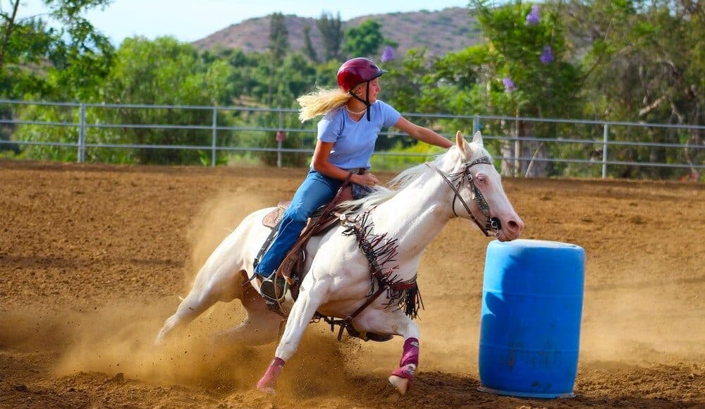

I am a 17-year old freshman at Carlow University, majoring in Chemistry. I'm working towards a minor in Computer Science, which is why I'm currently taking a coding class. I work part-time at a horse barn, and also part-time at a political non-profit, doing graphic design work.
My favorite hobby is horse riding. I currently own a horse named Maggie, as well as a mini-horse named Turnip. As I said above, I work at a horse barn, which has given me much experience with handling horses, as well as administering medicine. I can ride both English and Western, but I prefer Western Gaming like pole-bending and barrell racing.
